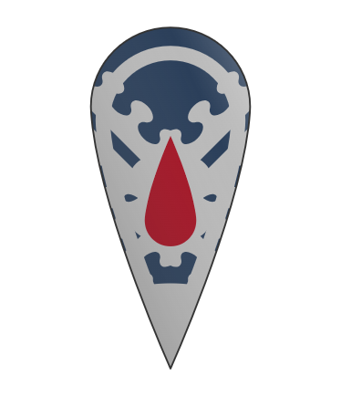

Population: ~44,693
Size: ~4021 km2
Location: Northeastern Latrian Peninsula
Description: Krovia is a land of twilight and endurance - Among the realms in Latria its among the oldest.
Its people speak in slow, old dialects of the Krovian Tongue and keep strict customs of invitation, hearth, and light.
By night the hilltop keeps awaken: crimson banners flutter, and courtly processions of vampires oversee governance.
By day, the mortal steward and the dьnь-sǫdъ manage trade, law, and diplomacy.
Climate: Sub-arctic maritime - short, cool summers (~7 °C average), long winters heavy with snow and sea-fog. The coasts remain ice-free due to warm currents, but inland valleys freeze for months.
Economy: Small but efficient, rooted in crafts, metalwork, and trade. The undead nobility favor long-lasting artistry: silver filigree, black-iron armory, fine glass, and dyed cloth. Mortals farm hardy grains and herd reindeer and shaggy oxen. Coastal towns export salt-fish, fur, and iron goods. Vampiric courts quietly fund mercantile ventures through mortal fronts.
GDP: 683,910 GC
GDP per capita: 15.3 GC
(1 Gold Coin = $585)
Military: Small, disciplined, and old. The čьrmnogardъ (vampiric knights and retainers) command mortal levies. Few in number but unmatched in night warfare and fort defense. Coastal watchtowers maintain signal-fires, and a modest fleet of black-hulled cutters patrols the Sea.
Culture: Krovias people are reverent of hearth spirits, oaths, and ancestors. Common folk fear but respect their “nъťь-vladъje.” Superstitions run deep: mirrors are covered at dusk, and candles burn red wax during winter. Despite the vampiric rulers, art and song flourish - ballads of longing, endurance, and cold beauty fill the taverns.
Government: Noctarchatenal Monarchy ; A feudal monarchy ruled by vampiric nobility. The reigning Noctarch (High Lord or Lady) presides from the capital citadel.
A mortal dьnь-vladъka, elected from selected and loyal mortal families, administers by daylight. Mortals may serve as mayors or scribes, but true power remains in the nocturnal courts.
Exports: Refined silver and black-iron weapons, Fine dyed fabrics and glassware, Salted fish and furs, Alchemical reagents (notably “Red Mercury”), Rare wines and preserved blood-tonics (for export to other vampiric houses)
Symbol & Colors: Silver - eternity and moonlight, Deep Blue - the night sea surrounding Krovia, Crimson - life’s blood, and the hidden power sustaining the realm
